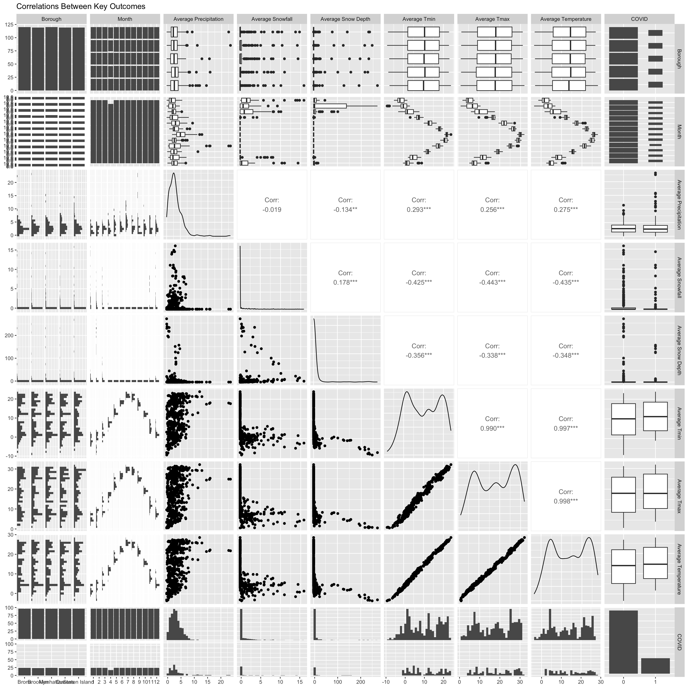

Regression
REGRESSION
In this section, we are intended to construct a linear model to generate the monthly number of rats observed using a variety of potential predictors potential predictors, as well as a logistic model to predict the chance of seeing a rat. These two models will be further utilized in the Shiny App for rat activity prediction.
# tidy the data
rat = bind_rows(rat_2012, rat_2013, rat_2014, rat_2015, rat_2016, rat_2017, rat_2018, rat_2019, rat_2020, rat_2021) %>%
select(-...1) %>%
mutate(inspection_month_n = case_when(inspection_month == "Jan" ~ 1,
inspection_month == "Feb" ~ 2,
inspection_month == "Mar" ~ 3,
inspection_month == "Apr" ~ 4,
inspection_month == "May" ~ 5,
inspection_month == "Jun" ~ 6,
inspection_month == "Jul" ~ 7,
inspection_month == "Aug" ~ 8,
inspection_month == "Sep" ~ 9,
inspection_month == "Oct" ~ 10,
inspection_month == "Nov" ~ 11,
inspection_month == "Dec" ~ 12)) %>%
mutate(date = paste(inspection_year, inspection_month_n, inspection_day, sep = "-")) %>%
mutate(date = as.Date(date,format = "%Y-%m-%d")) %>%
mutate(inspection_ym = paste(inspection_year, inspection_month_n, sep = "-")) %>%
mutate(covid_yn = case_when(date < "2020-02-29" ~ 0,
TRUE ~ 1)) %>%
mutate(covid_yn = as.factor(covid_yn)) %>%
separate(inspection_time, into = c("hour", "minute", "second")) %>%
mutate(hour = as.numeric(hour)) %>%
mutate(inspection_daytime = case_when(
hour < 6 | hour >= 18 ~ "Night",
hour >= 6 & hour < 12 ~ "Morning",
hour >= 12 & hour < 18 ~ "Afternoon"))Linear Regression Model
Exploratory Statistical Analyses
cases = rat %>%
select(inspection_ym, borough, inspection_month_n) %>%
group_by(inspection_ym, borough) %>%
add_count(borough, inspection_ym, name = "borough_monthly_cases") %>%
distinct()
rat_tidy = rat %>%
dplyr::select(boro_code, borough, inspection_ym, inspection_month, covid_yn, prcp, snow, snwd, tmin, tmax) %>%
mutate(borough = as.factor(borough),
inspection_month = as.factor(inspection_month)) %>%
group_by(inspection_ym, borough) %>%
summarise(avg_prcp = mean(prcp),
avg_snow = mean(snow),
avg_snwd = mean(snwd),
avg_tmin = mean(tmin),
avg_tmax = mean(tmax)) %>%
mutate(avg_temp = (avg_tmin + avg_tmax)/2) %>%
mutate(covid_yn = case_when(inspection_ym < "2020-02" ~ 0, TRUE ~ 1)) %>%
mutate(boro_code = case_when(borough == "Manhattan" ~ 1,
borough == "Bronx" ~ 2,
borough == "Brooklyn" ~ 1,
borough == "Queens" ~ 4,
borough == "Staten Island" ~ 5))
cases_borough_monthly = merge(x = rat_tidy, y = cases, by = c("inspection_ym", "borough"))
# correlation between key predictors
cases_borough_monthly %>%
dplyr::select(borough, inspection_month_n, avg_prcp, avg_snow, avg_snwd, avg_tmin, avg_tmax, avg_temp, covid_yn) %>%
mutate(inspection_month_n = as.factor(inspection_month_n),
covid_yn = as.factor(covid_yn)) %>%
rename(
"Borough" = borough,
"Month" = inspection_month_n,
"Average Precipitation" = avg_prcp,
"Average Snowfall" = avg_snow,
"Average Snow Depth" = avg_snwd,
"Average Tmin" = avg_tmin,
"Average Tmax" = avg_tmax,
"Average Temperature" = avg_temp,
"COVID" = covid_yn
) %>%
ggpairs(
title = "Correlations Between Key Outcomes"
) +
scale_fill_discrete()
# correlation between predictors and outcome
cases_borough_monthly %>%
dplyr::select(boro_code, inspection_month_n, avg_prcp, avg_snow, avg_snwd, avg_tmin, avg_tmax, avg_temp, covid_yn, borough_monthly_cases) %>%
rename(
"Borough" = boro_code,
"Month" = inspection_month_n,
"Average Precipitation" = avg_prcp,
"Average Snowfall" = avg_snow,
"Average Snow Depth" = avg_snwd,
"Average Tmin" = avg_tmin,
"Average Tmax" = avg_tmax,
"Average Temperature" = avg_temp,
"COVID" = covid_yn
) %>%
cor_mat() %>%
cor_gather() %>%
filter(var1 %in% "borough_monthly_cases") %>%
filter(!var2 %in% "borough_monthly_cases") %>%
ggplot(aes(x = var1, y = var2, fill = cor, label = cor)) +
geom_tile(color = "white") +
geom_text(color = "white",size = 4) +
scale_x_discrete(labels = c("Borough Monthly cases")) +
labs(x = "Outcome Variable", y = "Predictor Variables",
title = "Correlation Matrix between Predictors and Outcome",
fill = "Correlation")
# variable overview
skimr::skim(cases_borough_monthly)| Name | cases_borough_monthly |
| Number of rows | 597 |
| Number of columns | 12 |
| _______________________ | |
| Column type frequency: | |
| character | 1 |
| factor | 1 |
| numeric | 10 |
| ________________________ | |
| Group variables | None |
Variable type: character
| skim_variable | n_missing | complete_rate | min | max | empty | n_unique | whitespace |
|---|---|---|---|---|---|---|---|
| inspection_ym | 0 | 1 | 6 | 7 | 0 | 120 | 0 |
Variable type: factor
| skim_variable | n_missing | complete_rate | ordered | n_unique | top_counts |
|---|---|---|---|---|---|
| borough | 0 | 1 | FALSE | 5 | Bro: 120, Man: 120, Bro: 119, Que: 119 |
Variable type: numeric
| skim_variable | n_missing | complete_rate | mean | sd | p0 | p25 | p50 | p75 | p100 | hist |
|---|---|---|---|---|---|---|---|---|---|---|
| avg_prcp | 0 | 1 | 3.15 | 2.48 | 0.00 | 1.52 | 2.70 | 4.09 | 23.20 | ▇▂▁▁▁ |
| avg_snow | 0 | 1 | 0.79 | 2.17 | 0.00 | 0.00 | 0.00 | 0.21 | 15.80 | ▇▁▁▁▁ |
| avg_snwd | 0 | 1 | 7.02 | 32.46 | 0.00 | 0.00 | 0.00 | 0.00 | 268.14 | ▇▁▁▁▁ |
| avg_tmin | 0 | 1 | 9.87 | 8.30 | -8.32 | 2.01 | 10.12 | 17.86 | 23.82 | ▂▇▅▆▇ |
| avg_tmax | 0 | 1 | 17.66 | 8.81 | 1.25 | 9.05 | 17.97 | 25.78 | 31.86 | ▅▆▆▆▇ |
| avg_temp | 0 | 1 | 13.77 | 8.53 | -3.41 | 5.52 | 14.39 | 21.82 | 27.84 | ▃▇▆▆▇ |
| covid_yn | 0 | 1 | 0.20 | 0.40 | 0.00 | 0.00 | 0.00 | 0.00 | 1.00 | ▇▁▁▁▂ |
| boro_code | 0 | 1 | 2.60 | 1.62 | 1.00 | 1.00 | 2.00 | 4.00 | 5.00 | ▇▅▁▃▃ |
| inspection_month_n | 0 | 1 | 6.51 | 3.46 | 1.00 | 3.00 | 7.00 | 10.00 | 12.00 | ▇▅▅▅▇ |
| borough_monthly_cases | 0 | 1 | 2813.53 | 2433.77 | 1.00 | 748.00 | 1949.00 | 4737.00 | 10645.00 | ▇▃▂▂▁ |
Model Fitting
# full model
cases_borough_monthly = cases_borough_monthly %>%
mutate(inspection_month = month.abb[inspection_month_n],
covid_yn = as.factor(covid_yn))
model_linear_full = lm(borough_monthly_cases ~ inspection_month + borough + covid_yn + avg_prcp + avg_snow + avg_snwd + avg_temp, data = cases_borough_monthly)
broom::tidy(model_linear_full) %>%
knitr::kable()| term | estimate | std.error | statistic | p.value |
|---|---|---|---|---|
| (Intercept) | 4877.56152 | 579.615793 | 8.4151633 | 0.0000000 |
| inspection_monthAug | -23.75773 | 641.514627 | -0.0370338 | 0.9704709 |
| inspection_monthDec | -315.92270 | 422.890928 | -0.7470548 | 0.4553353 |
| inspection_monthFeb | 110.61065 | 464.226729 | 0.2382686 | 0.8117575 |
| inspection_monthJan | -704.79392 | 521.621933 | -1.3511585 | 0.1771751 |
| inspection_monthJul | -297.34069 | 680.360646 | -0.4370339 | 0.6622505 |
| inspection_monthJun | -132.07181 | 547.714939 | -0.2411324 | 0.8095383 |
| inspection_monthMar | 213.70290 | 378.803232 | 0.5641528 | 0.5728698 |
| inspection_monthMay | -204.76235 | 407.848043 | -0.5020555 | 0.6158203 |
| inspection_monthNov | -601.71179 | 351.213875 | -1.7132347 | 0.0872075 |
| inspection_monthOct | -528.97590 | 357.576370 | -1.4793368 | 0.1395970 |
| inspection_monthSep | -347.95599 | 516.984759 | -0.6730488 | 0.5011862 |
| boroughBrooklyn | -202.80772 | 205.202472 | -0.9883298 | 0.3234061 |
| boroughManhattan | 234.56147 | 204.704306 | 1.1458551 | 0.2523309 |
| boroughQueens | -3006.29996 | 205.573090 | -14.6239956 | 0.0000000 |
| boroughStaten Island | -3867.04047 | 205.489319 | -18.8186933 | 0.0000000 |
| covid_yn1 | -1666.86661 | 167.384645 | -9.9583006 | 0.0000000 |
| avg_prcp | 38.26454 | 28.695437 | 1.3334712 | 0.1829043 |
| avg_snow | -51.98910 | 35.077476 | -1.4821220 | 0.1388547 |
| avg_snwd | -10.62638 | 2.667413 | -3.9837775 | 0.0000765 |
| avg_temp | -10.29318 | 42.849578 | -0.2402165 | 0.8102479 |
summary(model_linear_full)##
## Call:
## lm(formula = borough_monthly_cases ~ inspection_month + borough +
## covid_yn + avg_prcp + avg_snow + avg_snwd + avg_temp, data = cases_borough_monthly)
##
## Residuals:
## Min 1Q Median 3Q Max
## -3893.1 -823.4 -177.3 865.9 6637.1
##
## Coefficients:
## Estimate Std. Error t value Pr(>|t|)
## (Intercept) 4877.562 579.616 8.415 3.11e-16 ***
## inspection_monthAug -23.758 641.515 -0.037 0.9705
## inspection_monthDec -315.923 422.891 -0.747 0.4553
## inspection_monthFeb 110.611 464.227 0.238 0.8118
## inspection_monthJan -704.794 521.622 -1.351 0.1772
## inspection_monthJul -297.341 680.361 -0.437 0.6623
## inspection_monthJun -132.072 547.715 -0.241 0.8095
## inspection_monthMar 213.703 378.803 0.564 0.5729
## inspection_monthMay -204.762 407.848 -0.502 0.6158
## inspection_monthNov -601.712 351.214 -1.713 0.0872 .
## inspection_monthOct -528.976 357.576 -1.479 0.1396
## inspection_monthSep -347.956 516.985 -0.673 0.5012
## boroughBrooklyn -202.808 205.202 -0.988 0.3234
## boroughManhattan 234.561 204.704 1.146 0.2523
## boroughQueens -3006.300 205.573 -14.624 < 2e-16 ***
## boroughStaten Island -3867.040 205.489 -18.819 < 2e-16 ***
## covid_yn1 -1666.867 167.385 -9.958 < 2e-16 ***
## avg_prcp 38.265 28.695 1.333 0.1829
## avg_snow -51.989 35.077 -1.482 0.1389
## avg_snwd -10.626 2.667 -3.984 7.65e-05 ***
## avg_temp -10.293 42.850 -0.240 0.8102
## ---
## Signif. codes: 0 '***' 0.001 '**' 0.01 '*' 0.05 '.' 0.1 ' ' 1
##
## Residual standard error: 1585 on 576 degrees of freedom
## Multiple R-squared: 0.5899, Adjusted R-squared: 0.5756
## F-statistic: 41.42 on 20 and 576 DF, p-value: < 2.2e-16Full model: borough_monthly_cases ~ inspection_month + borough + covid_yn + avg_prcp + avg_snow + avg_snwd + avg_temp
# stepwise with AIC (full model)
step(model_linear_full, direction = "both")## Start: AIC=8818.76
## borough_monthly_cases ~ inspection_month + borough + covid_yn +
## avg_prcp + avg_snow + avg_snwd + avg_temp
##
## Df Sum of Sq RSS AIC
## - inspection_month 11 41374644 1489241909 8813.6
## - avg_temp 1 145048 1448012313 8816.8
## - avg_prcp 1 4469650 1452336915 8818.6
## <none> 1447867265 8818.8
## - avg_snow 1 5521717 1453388982 8819.0
## - avg_snwd 1 39892974 1487760239 8833.0
## - covid_yn 1 249273854 1697141119 8911.6
## - borough 4 1745919405 3193786670 9283.1
##
## Step: AIC=8813.58
## borough_monthly_cases ~ borough + covid_yn + avg_prcp + avg_snow +
## avg_snwd + avg_temp
##
## Df Sum of Sq RSS AIC
## - avg_temp 1 645366 1489887275 8811.8
## - avg_prcp 1 3462718 1492704627 8813.0
## <none> 1489241909 8813.6
## - avg_snow 1 6676451 1495918360 8814.3
## + inspection_month 11 41374644 1447867265 8818.8
## - avg_snwd 1 38346768 1527588677 8826.8
## - covid_yn 1 259704790 1748946698 8907.5
## - borough 4 1747059666 3236301575 9269.0
##
## Step: AIC=8811.84
## borough_monthly_cases ~ borough + covid_yn + avg_prcp + avg_snow +
## avg_snwd
##
## Df Sum of Sq RSS AIC
## - avg_prcp 1 2913533 1492800808 8811.0
## <none> 1489887275 8811.8
## - avg_snow 1 6126822 1496014097 8812.3
## + avg_temp 1 645366 1489241909 8813.6
## + inspection_month 11 41874962 1448012313 8816.8
## - avg_snwd 1 38649953 1528537228 8825.1
## - covid_yn 1 259622598 1749509873 8905.7
## - borough 4 1746841348 3236728623 9267.0
##
## Step: AIC=8811.01
## borough_monthly_cases ~ borough + covid_yn + avg_snow + avg_snwd
##
## Df Sum of Sq RSS AIC
## <none> 1492800808 8811.0
## - avg_snow 1 6041412 1498842220 8811.4
## + avg_prcp 1 2913533 1489887275 8811.8
## + avg_temp 1 96181 1492704627 8813.0
## + inspection_month 11 40305045 1452495763 8816.7
## - avg_snwd 1 42278134 1535078942 8825.7
## - covid_yn 1 256710249 1749511057 8903.7
## - borough 4 1744255398 3237056206 9265.1##
## Call:
## lm(formula = borough_monthly_cases ~ borough + covid_yn + avg_snow +
## avg_snwd, data = cases_borough_monthly)
##
## Coefficients:
## (Intercept) boroughBrooklyn boroughManhattan
## 4591.358 -200.567 234.745
## boroughQueens boroughStaten Island covid_yn1
## -2994.362 -3855.170 -1652.726
## avg_snow avg_snwd
## -47.282 -8.338model_linear = lm(borough_monthly_cases ~ borough + covid_yn + avg_snow + avg_snwd, data = cases_borough_monthly)
broom::tidy(model_linear) %>%
knitr::kable()| term | estimate | std.error | statistic | p.value |
|---|---|---|---|---|
| (Intercept) | 4591.358111 | 152.021884 | 30.2019550 | 0.0000000 |
| boroughBrooklyn | -200.567381 | 206.009043 | -0.9735853 | 0.3306621 |
| boroughManhattan | 234.744781 | 205.536729 | 1.1421062 | 0.2538739 |
| boroughQueens | -2994.362259 | 206.069683 | -14.5308238 | 0.0000000 |
| boroughStaten Island | -3855.169862 | 206.046700 | -18.7101753 | 0.0000000 |
| covid_yn1 | -1652.726053 | 164.218678 | -10.0641783 | 0.0000000 |
| avg_snow | -47.282100 | 30.624628 | -1.5439241 | 0.1231438 |
| avg_snwd | -8.338283 | 2.041559 | -4.0842717 | 0.0000503 |
summary(model_linear)##
## Call:
## lm(formula = borough_monthly_cases ~ borough + covid_yn + avg_snow +
## avg_snwd, data = cases_borough_monthly)
##
## Residuals:
## Min 1Q Median 3Q Max
## -3834.0 -783.9 -226.7 932.6 6254.2
##
## Coefficients:
## Estimate Std. Error t value Pr(>|t|)
## (Intercept) 4591.358 152.022 30.202 < 2e-16 ***
## boroughBrooklyn -200.567 206.009 -0.974 0.331
## boroughManhattan 234.745 205.537 1.142 0.254
## boroughQueens -2994.362 206.070 -14.531 < 2e-16 ***
## boroughStaten Island -3855.170 206.047 -18.710 < 2e-16 ***
## covid_yn1 -1652.726 164.219 -10.064 < 2e-16 ***
## avg_snow -47.282 30.625 -1.544 0.123
## avg_snwd -8.338 2.042 -4.084 5.03e-05 ***
## ---
## Signif. codes: 0 '***' 0.001 '**' 0.01 '*' 0.05 '.' 0.1 ' ' 1
##
## Residual standard error: 1592 on 589 degrees of freedom
## Multiple R-squared: 0.5771, Adjusted R-squared: 0.5721
## F-statistic: 114.8 on 7 and 589 DF, p-value: < 2.2e-16Stepwise model: borough_monthly_cases ~ borough + covid_yn + avg_snow + avg_snwd
# full model with log transformation
model_linear_full_log = lm(log(borough_monthly_cases) ~ inspection_month + borough + covid_yn + avg_prcp + avg_snow + avg_snwd + avg_temp, data = cases_borough_monthly)
broom::tidy(model_linear_full_log) %>%
knitr::kable()| term | estimate | std.error | statistic | p.value |
|---|---|---|---|---|
| (Intercept) | 7.6477113 | 0.2539622 | 30.1135775 | 0.0000000 |
| inspection_monthAug | -0.3615819 | 0.2810836 | -1.2863857 | 0.1988253 |
| inspection_monthDec | 0.4088321 | 0.1852923 | 2.2064177 | 0.0277486 |
| inspection_monthFeb | 0.7266223 | 0.2034038 | 3.5723141 | 0.0003834 |
| inspection_monthJan | 0.4531600 | 0.2285519 | 1.9827449 | 0.0478705 |
| inspection_monthJul | -0.5593521 | 0.2981042 | -1.8763644 | 0.0611106 |
| inspection_monthJun | -0.3652389 | 0.2399847 | -1.5219258 | 0.1285764 |
| inspection_monthMar | 0.6400278 | 0.1659750 | 3.8561705 | 0.0001282 |
| inspection_monthMay | -0.2591338 | 0.1787011 | -1.4500961 | 0.1475760 |
| inspection_monthNov | 0.1890598 | 0.1538865 | 1.2285663 | 0.2197362 |
| inspection_monthOct | -0.2114703 | 0.1566743 | -1.3497451 | 0.1776280 |
| inspection_monthSep | -0.3436626 | 0.2265201 | -1.5171400 | 0.1297800 |
| boroughBrooklyn | -0.0834743 | 0.0899107 | -0.9284128 | 0.3535823 |
| boroughManhattan | 0.0131220 | 0.0896925 | 0.1462998 | 0.8837359 |
| boroughQueens | -1.2875829 | 0.0900731 | -14.2948631 | 0.0000000 |
| boroughStaten Island | -2.5866328 | 0.0900364 | -28.7287423 | 0.0000000 |
| covid_yn1 | -1.0490882 | 0.0733406 | -14.3043274 | 0.0000000 |
| avg_prcp | 0.0320634 | 0.0125731 | 2.5501635 | 0.0110250 |
| avg_snow | -0.0204332 | 0.0153694 | -1.3294727 | 0.1842184 |
| avg_snwd | -0.0050600 | 0.0011687 | -4.3294482 | 0.0000176 |
| avg_temp | 0.0460598 | 0.0187748 | 2.4532764 | 0.0144514 |
summary(model_linear_full_log)##
## Call:
## lm(formula = log(borough_monthly_cases) ~ inspection_month +
## borough + covid_yn + avg_prcp + avg_snow + avg_snwd + avg_temp,
## data = cases_borough_monthly)
##
## Residuals:
## Min 1Q Median 3Q Max
## -6.9049 -0.3207 0.0346 0.3924 1.4965
##
## Coefficients:
## Estimate Std. Error t value Pr(>|t|)
## (Intercept) 7.647711 0.253962 30.114 < 2e-16 ***
## inspection_monthAug -0.361582 0.281084 -1.286 0.198825
## inspection_monthDec 0.408832 0.185292 2.206 0.027749 *
## inspection_monthFeb 0.726622 0.203404 3.572 0.000383 ***
## inspection_monthJan 0.453160 0.228552 1.983 0.047871 *
## inspection_monthJul -0.559352 0.298104 -1.876 0.061111 .
## inspection_monthJun -0.365239 0.239985 -1.522 0.128576
## inspection_monthMar 0.640028 0.165975 3.856 0.000128 ***
## inspection_monthMay -0.259134 0.178701 -1.450 0.147576
## inspection_monthNov 0.189060 0.153887 1.229 0.219736
## inspection_monthOct -0.211470 0.156674 -1.350 0.177628
## inspection_monthSep -0.343663 0.226520 -1.517 0.129780
## boroughBrooklyn -0.083474 0.089911 -0.928 0.353582
## boroughManhattan 0.013122 0.089692 0.146 0.883736
## boroughQueens -1.287583 0.090073 -14.295 < 2e-16 ***
## boroughStaten Island -2.586633 0.090036 -28.729 < 2e-16 ***
## covid_yn1 -1.049088 0.073341 -14.304 < 2e-16 ***
## avg_prcp 0.032063 0.012573 2.550 0.011025 *
## avg_snow -0.020433 0.015369 -1.329 0.184218
## avg_snwd -0.005060 0.001169 -4.329 1.76e-05 ***
## avg_temp 0.046060 0.018775 2.453 0.014451 *
## ---
## Signif. codes: 0 '***' 0.001 '**' 0.01 '*' 0.05 '.' 0.1 ' ' 1
##
## Residual standard error: 0.6947 on 576 degrees of freedom
## Multiple R-squared: 0.7284, Adjusted R-squared: 0.7189
## F-statistic: 77.23 on 20 and 576 DF, p-value: < 2.2e-16Full model with transformation: log(borough_monthly_cases) ~ inspection_month + borough + covid_yn + avg_prcp + avg_snow + avg_snwd + avg_temp
# stepwise with AIC
step(model_linear_full_log, direction = "both")## Start: AIC=-414.36
## log(borough_monthly_cases) ~ inspection_month + borough + covid_yn +
## avg_prcp + avg_snow + avg_snwd + avg_temp
##
## Df Sum of Sq RSS AIC
## - avg_snow 1 0.85 278.82 -414.54
## <none> 277.96 -414.36
## - avg_temp 1 2.90 280.87 -410.16
## - avg_prcp 1 3.14 281.10 -409.66
## - inspection_month 11 14.44 292.41 -406.12
## - avg_snwd 1 9.05 287.01 -397.25
## - covid_yn 1 98.74 376.70 -234.89
## - borough 4 622.04 900.00 279.06
##
## Step: AIC=-414.54
## log(borough_monthly_cases) ~ inspection_month + borough + covid_yn +
## avg_prcp + avg_snwd + avg_temp
##
## Df Sum of Sq RSS AIC
## <none> 278.82 -414.54
## + avg_snow 1 0.85 277.96 -414.36
## - avg_prcp 1 2.83 281.65 -410.50
## - avg_temp 1 3.93 282.74 -408.18
## - inspection_month 11 14.63 293.44 -406.01
## - avg_snwd 1 9.01 287.83 -397.54
## - covid_yn 1 98.67 377.49 -235.65
## - borough 4 621.21 900.02 277.07##
## Call:
## lm(formula = log(borough_monthly_cases) ~ inspection_month +
## borough + covid_yn + avg_prcp + avg_snwd + avg_temp, data = cases_borough_monthly)
##
## Coefficients:
## (Intercept) inspection_monthAug inspection_monthDec
## 7.574500 -0.434376 0.415971
## inspection_monthFeb inspection_monthJan inspection_monthJul
## 0.753343 0.458721 -0.633112
## inspection_monthJun inspection_monthMar inspection_monthMay
## -0.422089 0.630920 -0.289106
## inspection_monthNov inspection_monthOct inspection_monthSep
## 0.191523 -0.229212 -0.392961
## boroughBrooklyn boroughManhattan boroughQueens
## -0.080494 0.014658 -1.282208
## boroughStaten Island covid_yn1 avg_prcp
## -2.581666 -1.048722 0.030293
## avg_snwd avg_temp
## -0.005051 0.052016model_linear_log = lm(log(borough_monthly_cases) ~ inspection_month + borough + covid_yn + avg_prcp + avg_snwd + avg_temp, data = cases_borough_monthly)
broom::tidy(model_linear_log) %>%
knitr::kable()| term | estimate | std.error | statistic | p.value |
|---|---|---|---|---|
| (Intercept) | 7.5745005 | 0.2480849 | 30.5318842 | 0.0000000 |
| inspection_monthAug | -0.4343765 | 0.2758823 | -1.5744994 | 0.1159202 |
| inspection_monthDec | 0.4159713 | 0.1853376 | 2.2443983 | 0.0251850 |
| inspection_monthFeb | 0.7533430 | 0.2025429 | 3.7194235 | 0.0002192 |
| inspection_monthJan | 0.4587210 | 0.2286655 | 2.0060786 | 0.0453141 |
| inspection_monthJul | -0.6331118 | 0.2930907 | -2.1601225 | 0.0311743 |
| inspection_monthJun | -0.4220892 | 0.2363012 | -1.7862338 | 0.0745864 |
| inspection_monthMar | 0.6309198 | 0.1659438 | 3.8020096 | 0.0001588 |
| inspection_monthMay | -0.2891064 | 0.1773912 | -1.6297677 | 0.1036963 |
| inspection_monthNov | 0.1915228 | 0.1539777 | 1.2438347 | 0.2140655 |
| inspection_monthOct | -0.2292118 | 0.1562087 | -1.4673432 | 0.1428276 |
| inspection_monthSep | -0.3929611 | 0.2236129 | -1.7573275 | 0.0793923 |
| boroughBrooklyn | -0.0804943 | 0.0899425 | -0.8949529 | 0.3711855 |
| boroughManhattan | 0.0146582 | 0.0897446 | 0.1633318 | 0.8703144 |
| boroughQueens | -1.2822084 | 0.0900422 | -14.2400861 | 0.0000000 |
| boroughStaten Island | -2.5816659 | 0.0900187 | -28.6792259 | 0.0000000 |
| covid_yn1 | -1.0487221 | 0.0733889 | -14.2899364 | 0.0000000 |
| avg_prcp | 0.0302926 | 0.0125106 | 2.4213463 | 0.0157705 |
| avg_snwd | -0.0050514 | 0.0011695 | -4.3192825 | 0.0000184 |
| avg_temp | 0.0520163 | 0.0182445 | 2.8510664 | 0.0045132 |
summary(model_linear_log)##
## Call:
## lm(formula = log(borough_monthly_cases) ~ inspection_month +
## borough + covid_yn + avg_prcp + avg_snwd + avg_temp, data = cases_borough_monthly)
##
## Residuals:
## Min 1Q Median 3Q Max
## -6.8717 -0.3149 0.0366 0.4010 1.4905
##
## Coefficients:
## Estimate Std. Error t value Pr(>|t|)
## (Intercept) 7.574500 0.248085 30.532 < 2e-16 ***
## inspection_monthAug -0.434376 0.275882 -1.574 0.115920
## inspection_monthDec 0.415971 0.185338 2.244 0.025185 *
## inspection_monthFeb 0.753343 0.202543 3.719 0.000219 ***
## inspection_monthJan 0.458721 0.228666 2.006 0.045314 *
## inspection_monthJul -0.633112 0.293091 -2.160 0.031174 *
## inspection_monthJun -0.422089 0.236301 -1.786 0.074586 .
## inspection_monthMar 0.630920 0.165944 3.802 0.000159 ***
## inspection_monthMay -0.289106 0.177391 -1.630 0.103696
## inspection_monthNov 0.191523 0.153978 1.244 0.214065
## inspection_monthOct -0.229212 0.156209 -1.467 0.142828
## inspection_monthSep -0.392961 0.223613 -1.757 0.079392 .
## boroughBrooklyn -0.080494 0.089943 -0.895 0.371185
## boroughManhattan 0.014658 0.089745 0.163 0.870314
## boroughQueens -1.282208 0.090042 -14.240 < 2e-16 ***
## boroughStaten Island -2.581666 0.090019 -28.679 < 2e-16 ***
## covid_yn1 -1.048722 0.073389 -14.290 < 2e-16 ***
## avg_prcp 0.030293 0.012511 2.421 0.015771 *
## avg_snwd -0.005051 0.001170 -4.319 1.84e-05 ***
## avg_temp 0.052016 0.018245 2.851 0.004513 **
## ---
## Signif. codes: 0 '***' 0.001 '**' 0.01 '*' 0.05 '.' 0.1 ' ' 1
##
## Residual standard error: 0.6951 on 577 degrees of freedom
## Multiple R-squared: 0.7275, Adjusted R-squared: 0.7186
## F-statistic: 81.09 on 19 and 577 DF, p-value: < 2.2e-16Stepwise model with log transformation: log(borough_monthly_cases) ~ inspection_month + borough + covid_yn + avg_prcp + avg_snwd + avg_temp
Model Diagnostics
set.seed(100)
par(mfrow = c(2,2))
plot(model_linear)anova(model_linear)## Analysis of Variance Table
##
## Response: borough_monthly_cases
## Df Sum Sq Mean Sq F value Pr(>F)
## borough 4 1729087485 432271871 170.5573 < 2.2e-16 ***
## covid_yn 1 252595724 252595724 99.6643 < 2.2e-16 ***
## avg_snow 1 13473585 13473585 5.3161 0.02148 *
## avg_snwd 1 42278134 42278134 16.6813 5.033e-05 ***
## Residuals 589 1492800808 2534467
## ---
## Signif. codes: 0 '***' 0.001 '**' 0.01 '*' 0.05 '.' 0.1 ' ' 1set.seed(100)
par(mfrow = c(2,2))
plot(model_linear_log)anova(model_linear_log)## Analysis of Variance Table
##
## Response: log(borough_monthly_cases)
## Df Sum Sq Mean Sq F value Pr(>F)
## inspection_month 11 8.46 0.769 1.5910 0.097283 .
## borough 4 616.80 154.200 319.1120 < 2.2e-16 ***
## covid_yn 1 91.25 91.248 188.8357 < 2.2e-16 ***
## avg_prcp 1 3.72 3.718 7.6939 0.005720 **
## avg_snwd 1 20.37 20.367 42.1479 1.826e-10 ***
## avg_temp 1 3.93 3.928 8.1286 0.004513 **
## Residuals 577 278.82 0.483
## ---
## Signif. codes: 0 '***' 0.001 '**' 0.01 '*' 0.05 '.' 0.1 ' ' 1outlierTest(model_linear)## rstudent unadjusted p-value Bonferroni p
## 312 3.996286 7.2521e-05 0.043295durbinWatsonTest(model_linear)## lag Autocorrelation D-W Statistic p-value
## 1 0.3459615 1.303431 0
## Alternative hypothesis: rho != 0performance::check_collinearity(model_linear)## # Check for Multicollinearity
##
## Low Correlation
##
## Term VIF VIF 95% CI Increased SE Tolerance Tolerance 95% CI
## borough 1.00 [1.00, Inf] 1.00 1.00 [0.00, 1.00]
## covid_yn 1.00 [1.00, Inf] 1.00 1.00 [0.00, 1.00]
## avg_snow 1.03 [1.00, 1.39] 1.02 0.97 [0.72, 1.00]
## avg_snwd 1.03 [1.00, 1.42] 1.02 0.97 [0.70, 1.00]outlierTest(model_linear_log)## rstudent unadjusted p-value Bonferroni p
## 511 -11.273391 8.9597e-27 5.3490e-24
## 512 -10.281643 7.0283e-23 4.1959e-20
## 516 -4.750129 2.5695e-06 1.5340e-03
## 517 -4.614038 4.8712e-06 2.9081e-03durbinWatsonTest(model_linear_log)## lag Autocorrelation D-W Statistic p-value
## 1 0.3899955 1.218201 0
## Alternative hypothesis: rho != 0performance::check_collinearity(model_linear_log)## # Check for Multicollinearity
##
## Low Correlation
##
## Term VIF VIF 95% CI Increased SE Tolerance Tolerance 95% CI
## covid_yn 1.05 [1.01, 1.28] 1.02 0.95 [0.78, 0.99]
## avg_prcp 1.19 [1.10, 1.33] 1.09 0.84 [0.75, 0.91]
## avg_snwd 1.78 [1.60, 2.00] 1.33 0.56 [0.50, 0.62]
## inspection_month 38.48 [33.05, 44.82] 6.20 0.03 [0.02, 0.03]
##
## High Correlation
##
## Term VIF VIF 95% CI Increased SE Tolerance Tolerance 95% CI
## borough 1.01 [1.00, 7390.92] 1.00 0.99 [0.00, 1.00]
## avg_temp 29.89 [25.69, 34.81] 5.47 0.03 [0.03, 0.04]
Cross-validation
The final model is log(borough_monthly_cases) ~ inspection_month + borough + covid_yn + avg_prcp + avg_snwd + avg_temp
Logistic Regression Model
We set the Result variable as the binary outcome. Passed(0) means none was inspected.
rat_binary = rat %>%
select(result, borough, inspection_month, inspection_daytime, covid_yn, prcp, snow, snwd, tmin, tmax) %>%
mutate(inspection_result = case_when(
result == "Passed" ~ 0,
result == "Rat Activity" ~ 1)) %>%
drop_na(inspection_result) %>%
mutate(inspection_result = as.factor(inspection_result),
borough = as.factor(borough),
covid_yn = as.factor(covid_yn),
inspection_month = as.factor(inspection_month),
inspection_daytime = as.factor(inspection_daytime)) %>%
mutate(Average_Temperature = (tmin + tmax)/2) %>%
mutate(feeling = as.character(Average_Temperature)) %>%
mutate(feeling = case_when(
Average_Temperature <= 0 ~ 'Frozen',
Average_Temperature <= 10 ~ 'Cold',
Average_Temperature <= 20 ~ 'Cool',
Average_Temperature <= 30 ~ 'Warm',
Average_Temperature <= 40 ~ 'Hot')) %>%
distinct()model_logit_original = glm(inspection_result ~ inspection_month + borough + covid_yn + inspection_daytime + prcp + snow + snwd + feeling, data = rat_binary, family="binomial")
model_logit = step(model_logit_original, direction = "backward")## Start: AIC=54235.26
## inspection_result ~ inspection_month + borough + covid_yn + inspection_daytime +
## prcp + snow + snwd + feeling
##
## Df Deviance AIC
## - inspection_month 11 54187 54217
## - feeling 4 54185 54229
## - snow 1 54184 54234
## - prcp 1 54184 54234
## - covid_yn 1 54185 54235
## <none> 54183 54235
## - snwd 1 54188 54238
## - inspection_daytime 2 54326 54374
## - borough 4 54969 55013
##
## Step: AIC=54217.21
## inspection_result ~ borough + covid_yn + inspection_daytime +
## prcp + snow + snwd + feeling
##
## Df Deviance AIC
## - feeling 4 54189 54211
## - snow 1 54188 54216
## - prcp 1 54188 54216
## - covid_yn 1 54189 54217
## <none> 54187 54217
## - snwd 1 54191 54219
## - inspection_daytime 2 54330 54356
## - borough 4 54973 54995
##
## Step: AIC=54211.14
## inspection_result ~ borough + covid_yn + inspection_daytime +
## prcp + snow + snwd
##
## Df Deviance AIC
## - snow 1 54190 54210
## - prcp 1 54190 54210
## - covid_yn 1 54190 54210
## <none> 54189 54211
## - snwd 1 54192 54212
## - inspection_daytime 2 54333 54351
## - borough 4 54974 54988
##
## Step: AIC=54209.65
## inspection_result ~ borough + covid_yn + inspection_daytime +
## prcp + snwd
##
## Df Deviance AIC
## - prcp 1 54191 54209
## - covid_yn 1 54191 54209
## <none> 54190 54210
## - snwd 1 54193 54211
## - inspection_daytime 2 54333 54349
## - borough 4 54975 54987
##
## Step: AIC=54208.61
## inspection_result ~ borough + covid_yn + inspection_daytime +
## snwd
##
## Df Deviance AIC
## - covid_yn 1 54192 54208
## <none> 54191 54209
## - snwd 1 54194 54210
## - inspection_daytime 2 54334 54348
## - borough 4 54975 54985
##
## Step: AIC=54207.92
## inspection_result ~ borough + inspection_daytime + snwd
##
## Df Deviance AIC
## <none> 54192 54208
## - snwd 1 54195 54209
## - inspection_daytime 2 54336 54348
## - borough 4 54979 54987#broom::tidy(model_logit) %>%
# knitr::kable()
summary(model_logit_original)##
## Call:
## glm(formula = inspection_result ~ inspection_month + borough +
## covid_yn + inspection_daytime + prcp + snow + snwd + feeling,
## family = "binomial", data = rat_binary)
##
## Deviance Residuals:
## Min 1Q Median 3Q Max
## -1.2295 -1.1735 -0.8172 1.1767 1.9513
##
## Coefficients:
## Estimate Std. Error z value Pr(>|z|)
## (Intercept) 0.0613405 0.0479004 1.281 0.200
## inspection_monthAug -0.0386828 0.0608935 -0.635 0.525
## inspection_monthDec -0.0366460 0.0536078 -0.684 0.494
## inspection_monthFeb 0.0231908 0.0568979 0.408 0.684
## inspection_monthJan -0.0305798 0.0576983 -0.530 0.596
## inspection_monthJul -0.0084547 0.0614143 -0.138 0.891
## inspection_monthJun 0.0037473 0.0557761 0.067 0.946
## inspection_monthMar -0.0042194 0.0513901 -0.082 0.935
## inspection_monthMay 0.0256107 0.0509317 0.503 0.615
## inspection_monthNov -0.0368601 0.0524613 -0.703 0.482
## inspection_monthOct 0.0043108 0.0505127 0.085 0.932
## inspection_monthSep -0.0176809 0.0551629 -0.321 0.749
## boroughBrooklyn -0.0281957 0.0295032 -0.956 0.339
## boroughManhattan -0.0209660 0.0296720 -0.707 0.480
## boroughQueens -0.2300569 0.0315935 -7.282 3.29e-13 ***
## boroughStaten Island -0.9482961 0.0390044 -24.313 < 2e-16 ***
## covid_yn1 0.0372497 0.0278365 1.338 0.181
## inspection_daytimeMorning -0.0015926 0.0205883 -0.077 0.938
## inspection_daytimeNight -0.7604350 0.0666666 -11.407 < 2e-16 ***
## prcp -0.0008809 0.0010585 -0.832 0.405
## snow -0.0007876 0.0010643 -0.740 0.459
## snwd -0.0006605 0.0003167 -2.085 0.037 *
## feelingCool -0.0337096 0.0363922 -0.926 0.354
## feelingFrozen -0.0189549 0.0469729 -0.404 0.687
## feelingHot -0.1185074 0.1340712 -0.884 0.377
## feelingWarm -0.0336682 0.0509965 -0.660 0.509
## ---
## Signif. codes: 0 '***' 0.001 '**' 0.01 '*' 0.05 '.' 0.1 ' ' 1
##
## (Dispersion parameter for binomial family taken to be 1)
##
## Null deviance: 55090 on 39902 degrees of freedom
## Residual deviance: 54183 on 39877 degrees of freedom
## AIC: 54235
##
## Number of Fisher Scoring iterations: 4anova(model_logit_original)## Analysis of Deviance Table
##
## Model: binomial, link: logit
##
## Response: inspection_result
##
## Terms added sequentially (first to last)
##
##
## Df Deviance Resid. Df Resid. Dev
## NULL 39902 55090
## inspection_month 11 3.83 39891 55087
## borough 4 751.03 39887 54336
## covid_yn 1 2.68 39886 54333
## inspection_daytime 2 142.01 39884 54191
## prcp 1 0.79 39883 54190
## snow 1 0.78 39882 54189
## snwd 1 4.69 39881 54185
## feeling 4 1.43 39877 54183set.seed(100)
par(mfrow=c(2,2))
plot(model_logit)anova(model_logit)## Analysis of Deviance Table
##
## Model: binomial, link: logit
##
## Response: inspection_result
##
## Terms added sequentially (first to last)
##
##
## Df Deviance Resid. Df Resid. Dev
## NULL 39902 55090
## borough 4 751.36 39898 54339
## inspection_daytime 2 143.78 39896 54195
## snwd 1 3.44 39895 54192Merge with Covid-19
url_covid = "https://raw.githubusercontent.com/YijiaJiang/p8105_final_project_data/main/rat_weather_covid.csv"
rat_covid = read_csv(url_covid)
rat_covid = rat_covid %>%
mutate(inspection_month_n = case_when(inspection_month == "Jan" ~ 1,
inspection_month == "Feb" ~ 2,
inspection_month == "Mar" ~ 3,
inspection_month == "Apr" ~ 4,
inspection_month == "May" ~ 5,
inspection_month == "Jun" ~ 6,
inspection_month == "Jul" ~ 7,
inspection_month == "Aug" ~ 8,
inspection_month == "Sep" ~ 9,
inspection_month == "Oct" ~ 10,
inspection_month == "Nov" ~ 11,
inspection_month == "Dec" ~ 12)) %>%
mutate(date = paste(inspection_year, inspection_month_n, inspection_day, sep = "-"))%>%
mutate(date = as.Date(date,format = "%Y-%m-%d"))